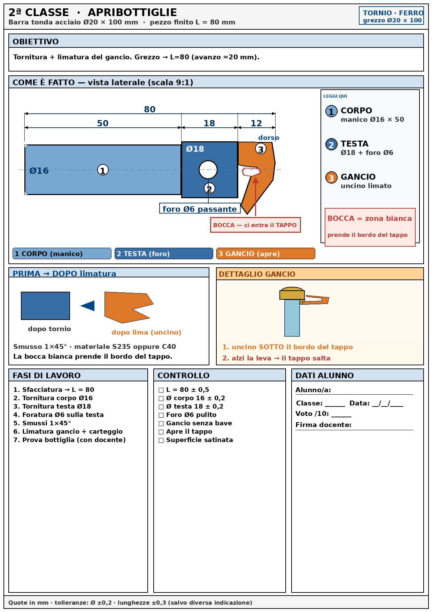
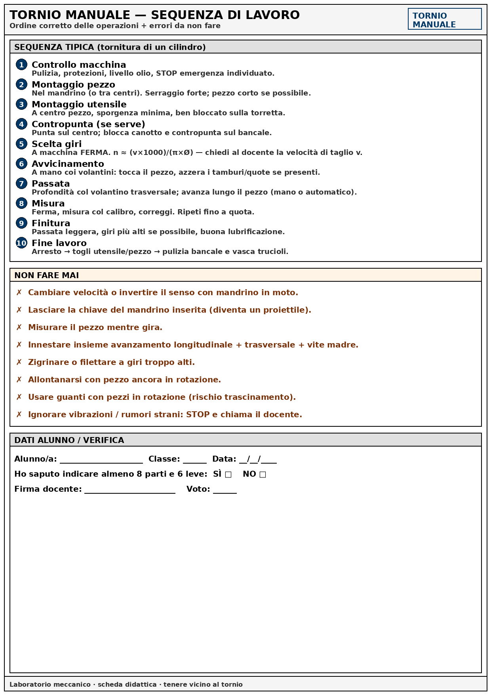
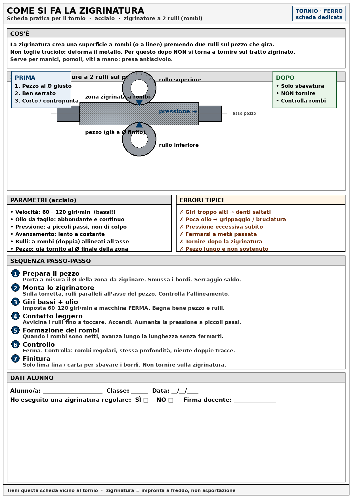
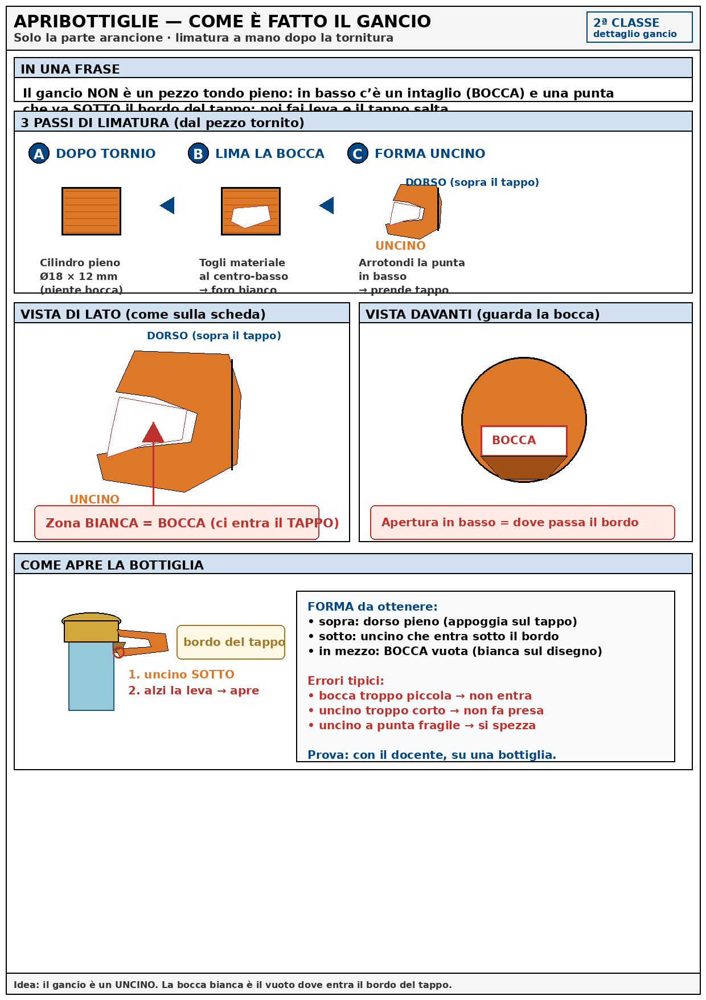
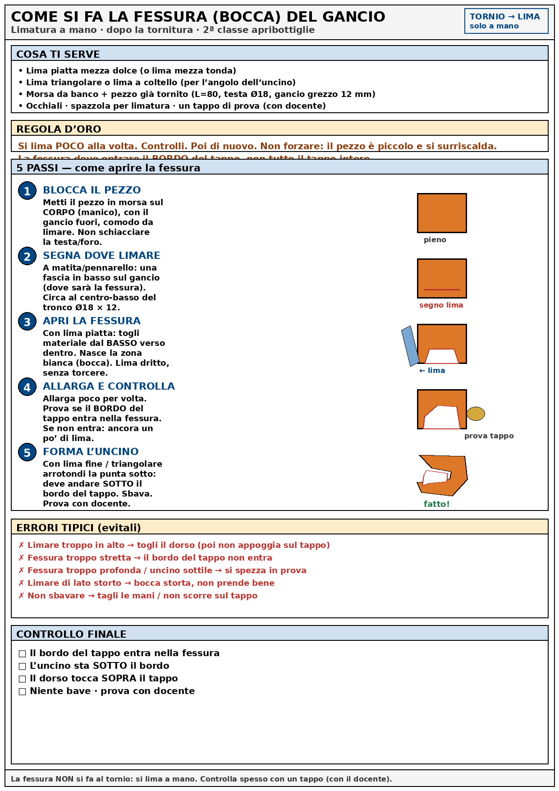
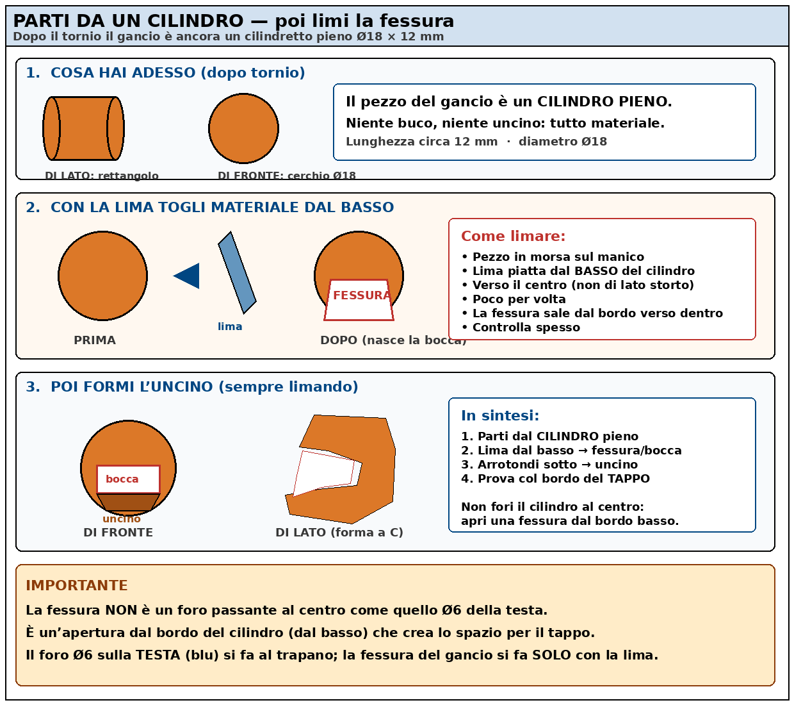
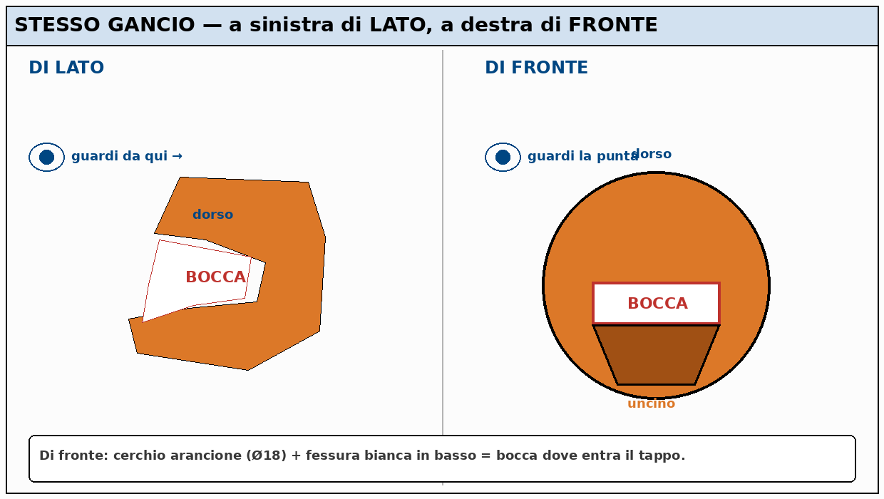
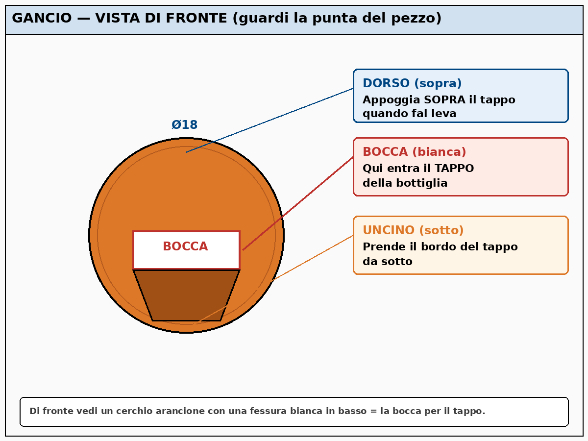
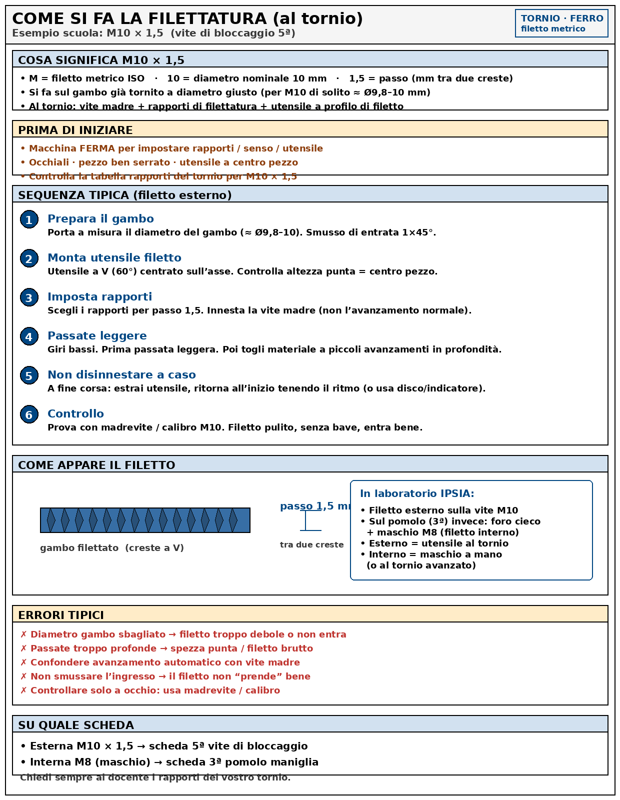

2ª Apribottiglie

Scarica 01-2a-apribottiglie.pngTieni premuto sull’immagine o usa Scarica
Progetti 2ª–5ª + tornio + zigrinatura + spiegazioni gancio/filettatura.

Scarica 01-2a-apribottiglie.png Scarica 02-3a-pomolo.png
Scarica 02-3a-pomolo.png
 Scarica 03-4a-cacciavite.png
Scarica 03-4a-cacciavite.png
 Scarica 04-5a-vite-M10.png
Scarica 04-5a-vite-M10.png
 Scarica 05-tornio-parti.png
Scarica 05-tornio-parti.png
 Scarica 06-tornio-leve.png
Scarica 06-tornio-leve.png

Scarica 07-tornio-sicurezza.png
Scarica 08-zigrinatura.png
Scarica 09-gancio-spiegazione.png
Scarica 10-come-fare-fessura.png
Scarica 11-dal-cilindro-alla-fessura.png
Scarica 12-gancio-lato-e-fronte.png
Scarica 13-gancio-di-fronte.png
Scarica 14-come-si-fa-filettatura.png